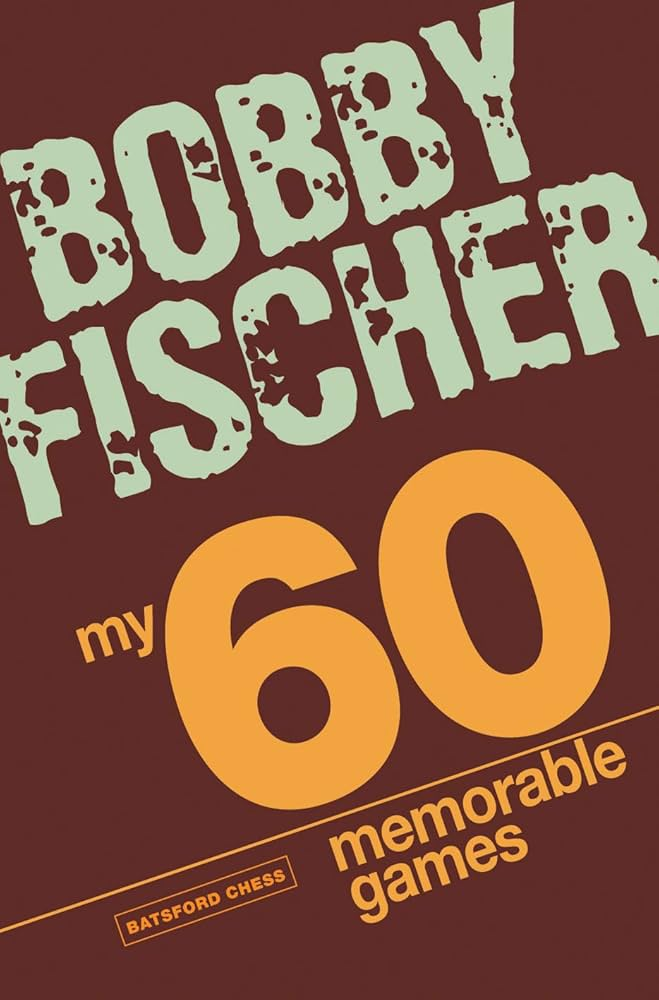

My 60 Memorable Games

"My 60 Memorable Games" is a classic chess book by Grandmaster Bobby Fischer . It presents 60 of Fischer’s most important and instructive games,
annotated with deep insights and personal commentary. A masterpiece of strategic thought, the book is celebrated for its clarity, honesty,
and competitive brilliance.
Game Highlights
-
Part 1: Early Triumphs
- Game 1: Fischer vs. Donald Byrne (The Game of the Century)
- Game 2: Fischer vs. Sherwin (Sharp Tactics and Sacrifices)
-
Part 2: Mid-Career Mastery
- Game 25: Fischer vs. Tal (Retribution and Precision)
- Game 30: Fischer vs. Gligorić (Positional Brilliance)
-
Part 3: Road to the Championship
- Game 55: Fischer vs. Taimanov (Dominating the Candidate Matches)
- Game 60: Fischer vs. Stein (Final Impressions)